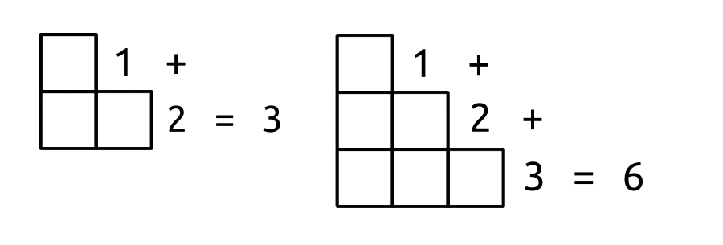

Triangular Numbers
From one point, you create two expanding lines. At one point on each line as you keep expanding, you connect the two lines, and get a triangle.
Then, zero represents the zeroth triangle; One represents the first triangle; Three represents the second triangle, one point and two line tips opposite the first point; Six represents the third, with another point added on the two lines' path, and a space inbetween. Etc.
There are more triangular numbers. 10, 15, 21, etc. The 4th triangular number is the sum of all numbers starting from one up to four. So, 1+2+3+4. If n represents a number from one to infinity, the nth triangular number is the sum of all numbers starting from one up to n, so 1+2+3+...+n.
Most numbers you can create on the paper geometrically. All drawings, representations, are yours, and so never need you fear simplifying in your representations. A blind man can feel the idea of a circle, a repeating of a series of things. Such a man can also have the realization that it is not a circle, but a spiral, if you consider time. This is therefore universal.
The idea of the 3rd triangular number can be written also as such, for less space usage:
| 3 | |
| ∑ | n = 6 |
| n=1 |
The letter in the middle is capital Sigma, a Greek letter. As you approach the Sigma from below you set your initial health points, call them n. You turn right and decide by which value your n should be changed. For example 2n means two 'n's, two times an n. Here, the n will remain with it's default value, and all further addition will happen by numbers that grow by one point, rather than 2 points for 2n, or other numbers of points for any other scoring system.
Finally, once all the numbers from one (initial n) to three have been added you have crossed the Sigma, and found your final value. This becomes more useful in a situation such as this: "How would you represent the 11th triangular number?" For bonus points, find the 11th triangular number without using a calculator. To write the operation horrizontally, use "1+2+... = result", where "=" is the horrizontal equal sign.
Answers
1.
| 11 | |
| ∑ | n = 66 |
| n=1 |